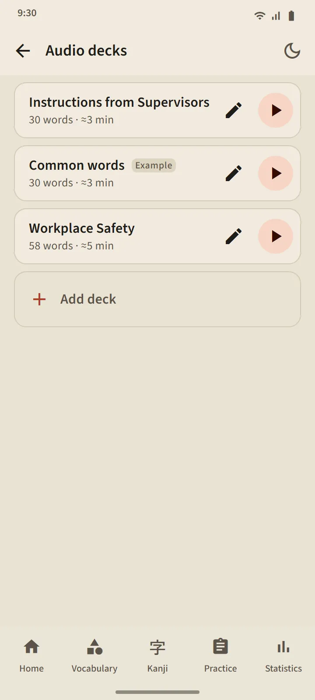
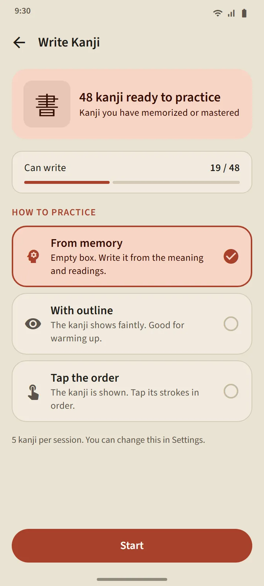

Audio decks you build yourself
Build a deck of 5 to 100 words: search one by one, or take them in bulk from any vocabulary deck. The player reads each word in Japanese, followed by its meaning in the app language (switch "Read meanings" off for Japanese only). The current word is shown large with furigana; tap a word in the list to jump to it.
Controls: shuffle, repeat, and speed at 0.75×, 1× or 1.25×. The player keeps going when the screen turns off or you switch apps; the player notification and headset buttons stay in control.
- Free version: 3 decks. Premium: unlimited, and a deck can be downloaded as one audio file (M4A).
- A sample deck, "Common words", is created automatically from the most frequent words; edit or delete it as you like.
- Listening never changes a word's schedule or stage.


Speaking practice: say it, and move on
A word you Know or have Mastered appears on a card; the microphone turns on by itself, you say the word, and if your phone recognises it, the next one appears. If not, the screen shows what it heard and listens again; after three tries it plays an example. The microphone button, the example button and Skip are always there. A session has 5, 10, 15 or 20 words.
Your voice is processed by your phone's speech-recognition service (usually Google's); the app does not record or store it. Only the word is judged, not your accent. Because speech recognition can mishear, this practice never lowers a word's stage.

Kanji writing: stroke by stroke
For kanji you Know or have Mastered. Only the meaning and readings are shown; you write in a full-width box, and each stroke is checked when you lift your finger: shape, direction and order. A correct stroke snaps to the standard shape; a wrong order or reversed direction is rejected with one sentence; after two misses the next stroke appears faintly with its starting point.
- From memory: an empty box. With outline: the kanji shows faintly, for warming up. Tap the order: the kanji is shown in full; tap its strokes in order.
- The Animation button plays the whole kanji being written, any time.
- A kanji counts as writable after you write it from memory without help on two different days; 5, 10 or 15 kanji per session.


Pronunciation everywhere
Vocabulary cards, kanji cards, word detail, kana lessons, grammar examples and listening questions are all read by your phone's Japanese text-to-speech engine, so no audio files need to be downloaded. Voice quality follows each phone's engine.